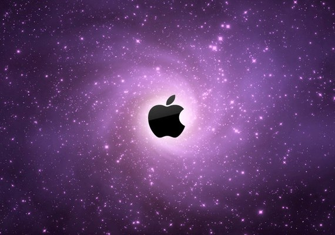
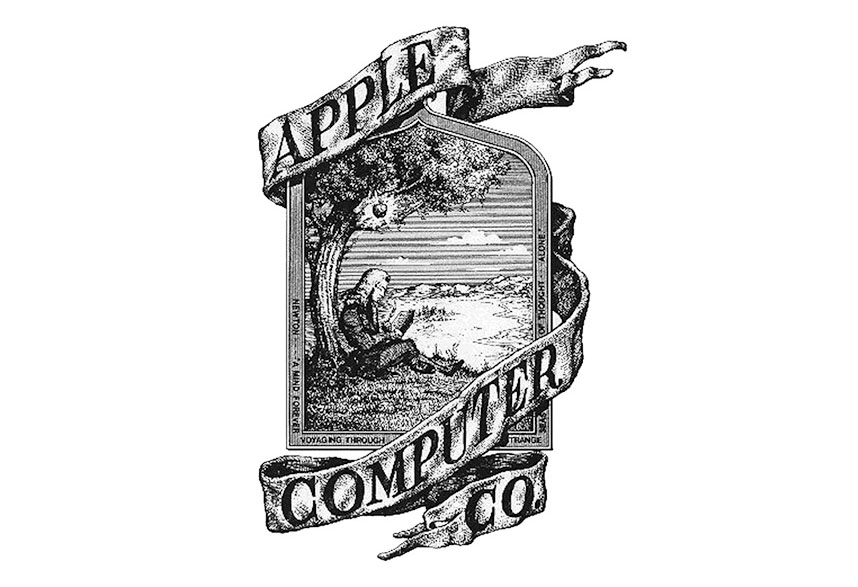
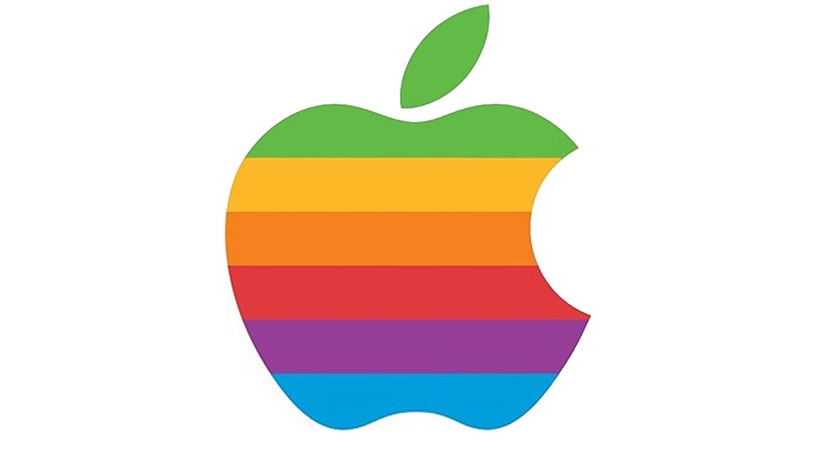
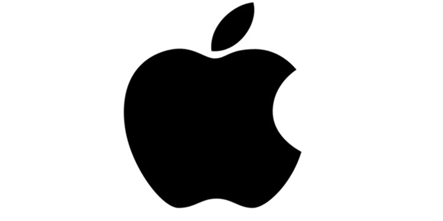
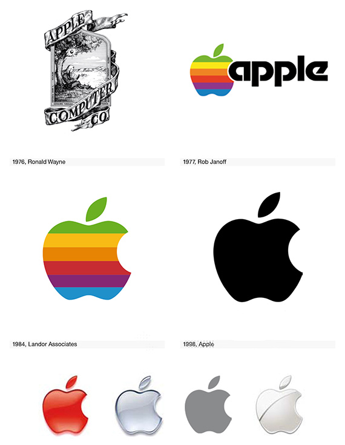

Apple Şirketinin merkezi California’da bulunmaktadır. Tüketici elektroniği, bilgisayar yazılımı ve kişisel bilgisayar tasarlayıp geliştiren ve satan çok uluslu şirket olup Amerikan menşeilidir. Ürettiği cihazlar içinde en bilinenleri Mac OS X işletim sistemli tablet ve bilgisayar, iPod müzik çalar, iPhone akıllı telefon ve iPad tablet cihazları ile bilinir.
Yazılımları arasında ise OS X ve iOS işletim sistemleri, iTunes medya tarayıcısı, Safari internet tarayıcısıdır.
1 Nisan 1976 yılında kurulan Apple, 3 Ocak 1977 tarihinde Apple Computer, Inc. adıyla anonim şirket oldu. Şirketin isminde “Computer” ibaresi 9 Ocak 2007’de iPhone tanıtımıyla birlikte tüketici elektroniğine yönelimlerini yansıtması amacıyla kaldırılmıştır.
Apple, Samsung ile beraber ciro açısından dünyanın en büyük bilgi teknolojileri şirketi ünvanına sahiptir. Bazen Samsung’un önünde yer alarak birinci olsa da bazen gerisinde yer alarak ikinci oluyor. Dünyanın en büyük mobil cihaz üreticilerinden olan Apple, dünya çapında müşterilere sahiptir.
Apple’ın yapı taşları Steve Jobs ve arkadaşı Steve Wozniak’ın teknolojiye olan ilgileri 1972 yılında Hawlett-Packard şirketinde işe girmeleri ile başlar. Bu yıllarda ev yapımı bilgisayarlar üzerine kolları sıvayan ikili, ticari açıdan da adeta birbirlerini tamamlamaktaydı.
Apple’ın kuruluşuna ve daha sonra başarısında giden yolda en önemli etken bu ikilinin birbirlerini iyi tanıması ve birbirlerini tamamlamasından gelmektedir. Apple’ın kuruluşu; Wozniak’ın bilgisayar bilgisi ve olağanüstü yeteneği ile Jobs’un ise bilgisayarlara olan ilgisi ve pazarlama yeteneğinin birleşimi olarak ortaya çıkmıştır.
1976 senesinde, Ron Wayne’ı da aralarına alarak, Apple şirketini kurdular. Ron Wayne aynı zamanda şirketin üçüncü kurucusu olarak bilinir. İlk bilgisayarları, Steve Wozniak’ın uğraşları sonucunda elde ettikleri sermaye ile kurdular. (MOS 6502 işlemci, Apple I)
Gece gündüz demeden çalışıp, ortaya çıkardıkları 200 adet Apple I bilgisayarın satışı gerçekleşirken, daha gelişmiş olan Apple II yi ortaya çıkarmak için gece gündüz çalışmaya devam ettiler. Ve nihayet Apple II ortaya çıktı. Bu başarılarını daha da ilerletmek ve üst seviyelere çıkarabilmek için, ofislerde IBM’e rakip olacak, Apple III’ü geliştirdiler.
Çok büyük hedeflerle Apple III’ü piyasaya süren ekip, hiç beklenmedik bir sorunla karşılaştı. Bu sorunun kaynağı bir tasarım hatası oldu. Bu hata bilgisayarlarda, aşırı ısınmaya neden oldu ve hasar gören yüzlerce Apple III geri alındı. Ancak beklenmedik olay bile Apple’ın başarısına engel olmadı ve 12 Aralık 1980’de Apple halka arz edildi ve rekor bir sermayeye kavuştu.
Bu tarihten sonra Steve Jobs nedendir bilinmez, ilk hatalı kararını verdi ve şirketin ticari yeterliliğe sahip bir yöneticiye ihtiyacı olduğuna kanaat getirdi. Bu doğrultuda John Sculley, Apple’ın başına geçti.
Steve Jobs, Apple’da adeta yeniden yapılanmanın temellerini oluşturuyordu. Bu yapılanmalar neticesinde ilk çevrimiçi Apple Store açıldı.
Apple, çalışmalarına hız kesmeden devam ediyordu. Her geçen gün yeni yazılımlar ve alanlar geliştiriliyordu. 2001 yılının son çeyreğinde, müzik çalar piyasasına iPod ile girildi. Bu gelişmeyle birlikte geliştirilen iTunes yazılımı, iPod’un en popüler müzik çalar olmasını sağladı. Bir çevrimiçi müzik mağazası olan iTunes Store, 2003 yılının Nisan ayında hizmete girdi.
Apple, 2007 yılında asıl ses getirici adımını attı ve iPhone piyasaya sürüldü. Bu tarihten sonra Apple şirketi daha da ses getirmeye ve bir teknoloji devi olma yolundaki adımlarını sağlamlaştırmaktaydı.
Apple’ın yenilikçi ürünlerinin epik mirasından ziyade, kurumsal kimliği çok daha önemli. Bugün Apple’ın geldiği noktaya baktığımızda da markaya yapılan yatırımın ne denli büyük olduğunu görebiliyoruz. Apple’ın ilk logosu 1976 yılında Steve Jobs ve Ronald Wayne tarafından, bir elma ağacının altında oturan Isaac Newton düşünülerek tasarlandı.
Bu iyi bir başlangıçtı fakat, logodaki hikaye markaya tam olarak hizmet etmediği için yeni tasarım konusunda Rob Janoff görevlendirildi. Rob, çok daha renkli olan ‘’gökkuşağı elma’’ fikrinin ikonik bir logo yaratması açısından etkili olacağını düşündü ve Steve Jobs’ı ikna etmeyi başardı. Bu arada ikonik logo yaratma ve daha fazla dikkat çekme fikri ön planda olmasına rağmen, yine Alan Turing rivayetine dönecek olursak gökkuşağının, homoseksüelliği temsil etmesi sebebiyle kullanıldığı söyleniyor. Tabikii bunun ne kadar doğru olduğunu bilemeyiz. Bir başka grup ise Isaac Newton anısına tasarlandığını, elmanın yerçekimini, renk ayrımının da Adem ve Havva’yı temsil ettiğini söylüyor. Janoff’a göre ise elmadaki ısırık, onu bir domatesten ayırmak için.
Apple’ın maddi sıkıntılar çekmeye başladığı önemde Steve Jobs, Apple logosunda yapılacak küçük değişikliklerin markaya yeni bir reklam yapma konusunda avantaj sağlayacağını düşündü ve gökkuşağı logosunu 1998 yılında tamamen siyaha bürüdü.
Marka ve temsil konusunda tek renkli logo anlayışı Apple’ın günümüze kadar sürdürdüğü bir politika. Şimdiki logosuna baktığımızda tek rengin devamlılığını görebiliyoruz. Siyahtan vazgeçen Apple, şimdi daha parlak renklerde logo kullanıyor. Yeni ürünlerindeki renk seçeneklerine baktığımızda gri ve altın çok daha dikkat çekici ve daha fazla tercih ediliyor.
